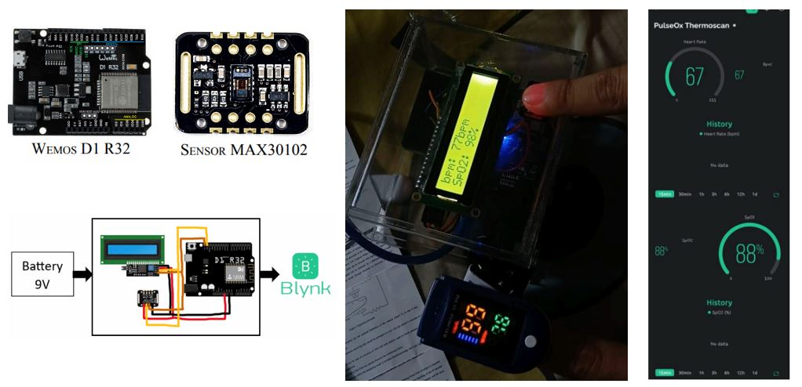
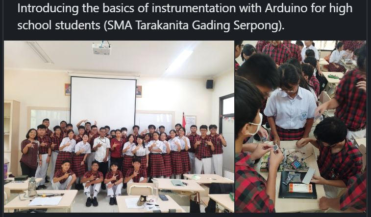

Webinar Presentation on Deep Learning for Medical Image Analysis (in Bahasa)
I had the opportunity to be a speaker in a webinar discussing the prospects of research based on deep learning models for medical image analysis. This session covered how AI-driven techniques can enhance medical imaging, improve diagnostic accuracy, and contribute to advancements in healthcare technology. The discussion also explored various deep learning architectures and their applications in analyzing medical images. The event was conducted online via Zoom, and I was joined by an expert moderator to facilitate an engaging and insightful discussion with participants.
Link for this event Link for presentation slidesWorkshop : FSKoM Day 2024

At FSKoM Day 2024, held by Matana University, I presented about oxygen saturation and heart rate measurement using Arduino. We learned how to build a system called PULOXY (PULse OXYgen), and collaborated with Nicholas Austrin Theos and Sharon Gracia Edward (my student in the instrumentation class). PULOXY is an IoT-based device for simultaneously detecting oxygen saturation and heart rate in the human body. In this case, they use Wemos D1 R32 (onboard WiFi and Bluetooth) and MAX30102 sensor. The good news is after adjusting some parameters of the sensor like ledBrightness, sampleAverage, sampleRate, and also pulseWitdh, test results show that it has an accuracy rate of up to 99% compared to conventional pulse oxymeters.
Link for presentation slidesWorkshop : Arduino Programming for High School Students

I conducted a workshop on the basics of Arduino programming and instrumentation for high school students, introducing fundamental concepts of electronics and coding. The session provided hands-on experience, allowing students to build simple circuits, interact with sensors, and understand how microcontrollers function. Through engaging activities and teamwork, participants gained practical insights into how Arduino can be used for real-world applications in science and technology.